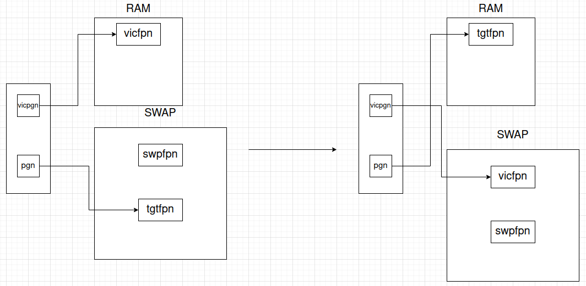

II. Triển khai
ALLOC-
Tìm một "victim" page trong virtual memory:int find_victim_page(struct mm_struct *mm, int *retpgn)- Lấy một page từ cuối hàng đợi
fifo_pgnmàmmđang quản lý, lưu số thứ tự của page đó vàoretpgn.
- Lấy một page từ cuối hàng đợi
-
Cấp phát các frame trên RAM và lưu trong danh sáchint alloc_pages_range(struct pcb_t *caller, int req_pgnum, struct framephy_struct **frm_lst)frm_lst:- Lặp qua
req_pgnumlần. Ở mỗi bước lặp, kiểm tra có thể cấp phát 1 frame trong RAM. Nếu được, thêm frame vừa được cấp phát vào đầu danh sáchfrm_lst. Nếu không, thực thi bước kế tiếp. - Tìm một frame
vicfpntrong RAM và thay thế nó bằng một free frameswpfpntrong SWAP. Việc lựa chọn mộtvicfpncần tìm một "victim" pagevicpgntrong virtual memory bằng hàmfind_victim_page. - Nếu việc tìm
vicpgnhoặc lấy mộtswpfpntrong SWAP thất bại thì giải phóng toàn bộ các frame đã được cấp phát trước đó và trả về lỗi. - Swap
vicfpntrong RAM vớiswpfpntrong SWAP. - Set page table entry tương ứng với
vicpgnbằng hàmpte_set_swap, thêmswpfpnvào đầu danh sáchfrm_lst.
- Lặp qua
-
Mapping các page tại địa chỉint vmap_page_range(struct pcb_t *caller, int addr, int pgnum, struct framephy_struct *frames, struct vm_rg_struct *ret_rg)addrvới các frame trong danh sáchframes:- Duyệt qua các page, set frame page table entry tương ứng với các page bằng hàm
pte_set_fpn. Sau đó chèn các page đó theo thứ tự vào đầu danh sáchfifo_pgn.
- Duyệt qua các page, set frame page table entry tương ứng với các page bằng hàm
-
Mapping virtual memory có kích thướcint vm_map_ram(struct pcb_t *caller, int astart, int aend, int mapstart, int incpgnum, struct vm_rg_struct *ret_rg)aend - astartvới RAM:- Cấp phát trên RAM số lượng frame bằng với số page
incpgnumtrên virtual memory bằng hàmalloc_pages_range, lưu các frame sau khi cấp phát thành một danh sáchfrm_lst. - Nếu cấp phát thành công, map các page tại địa chỉ
mapstartvới các frame trong danh sáchfrm_lstbằng hàmvmap_page_range.
- Cấp phát trên RAM số lượng frame bằng với số page
-
Tăng kích thước vùng nhớ củaint inc_vma_limit(struct pcb_t *caller, int vmaid, int inc_sz)vmaidlên một khoảng bằnginc_sz:- Kiểm tra
vmaidnếu tăng kích thước có bị tràn qua các vmaid lân cận. Nếu có, trả về lỗi (return -1), ngược lại thực thi bước kế tiếp. - Dịch con trỏ
sbrkvàvm_endcủavmaidlên thêm 1 khoảng bằnginc_sz. - Tiến hành mapping virtual memory vừa được cấp phát sang physical memory trên RAM bằng hàm
vm_map_ram.
- Kiểm tra
-
Cấp phát cho regionint __alloc(struct pcb_t *caller, int vmaid, int rgid, int size, int *alloc_addr)rgidmột vùng nhớ với kích thướcsize, sử dụng khóa mutex để bảo vệ virtual memory:- Nếu kích thước vùng nhớ trống của area
vmaid >= sizethì cấp phát thành công. - Nếu không đủ vùng nhớ, tăng kích thước của area
vmaidlên một khoảng bằng số lượng page vừa đủ chứasizebằng hàminc_vma_limit. - Sau khi tăng kích thước thành công, cấp phát
sizechorgid. - Thêm fragment do paging gây ra sau khi cấp phát (nếu có) vào danh sách
vm_freerg_listcủamm.
- Nếu kích thước vùng nhớ trống của area
-
Thực thi hàmint pgalloc(struct pcb_t *proc, uint32_t size, uint32_t reg_index)__allocvớivmaid = 0và ghi kết quả vào file output.
-
FREE-
Giải phóng vùng nhớint __free(struct pcb_t *caller, int vmaid, int rgid)rgid, sử dụng khóa mutex để bảo vệ virtual memory:- Nếu
rgid < 0hoặcrgid > PAGING_MAX_SYMTBL_SZhoặcsize rgid = 0, trả về lỗi (return -1). - Gán kích thước của vùng nhớ
rgidbằng 0, thêm vùng nhớ vừa được giải phóng vào danh sáchvm_freerg_listmàmmquản lý.
- Nếu
-
Thực thi hàmint pgfree_data(struct pcb_t *proc, uint32_t reg_index)__freevớivmaid = 0và ghi kết quả vào file output.
-
READ-
int pg_getpage(struct mm_struct *mm, int pgn, int *fpn, struct pcb_t *caller)Lấy frame
fpntương ứng với pagepgn:- Nếu frame online (frame đang được lưu trên RAM ), trả về
fpn. Nếu frame offline (frame đang được lưu trên SWAP), thực thi bước kế tiếp. - Tìm 1 "victim" page
vicpgntrong virtual memory bằng hàmfind_victim_pagevà lấy 1 free frameswpfpntừ SWAP. Nếu thành công, thực thi bước kế tiếp. - Swap
vicfpntương ứngvicpgntrong RAM vớiswpfpntrong SWAP. - Swap
tgtfpntương ứngpgntrong SWAP vớiswpfpntrong RAM. - Set swap page table entry tương ứng với
vicpgnbằng hàmpte_set_swap. - Set frame page table entry tương ứng
pgnbằng hàmpte_set_fpn. - Thêm
pgnvào danh sáchfifo_pgncủamm, trả vềfpn.
Hình vẽ mô tả: 
- Nếu frame online (frame đang được lưu trên RAM ), trả về
-
int pg_getval(struct mm_struct *mm, int addr, BYTE *data, struct pcb_t *caller)Lấy giá trị của ô nhớ tại địa chỉ
addrvà lưu vàodata:- Lấy page number và page offset từ
addr. - Lấy frame number trong RAM hoặc SWAP tương ứng với page number trong virtual memory bằng hàm
pg_getpage. - Nếu thành công, kết hợp frame number và page offset trả về physical memory. Đọc giá trị của địa chỉ vật lý này trong bộ nhớ vật lý bằng hàm
MEMPHY_read.
- Lấy page number và page offset từ
-
int __read(struct pcb_t *caller, int vmaid, int rgid, int offset, BYTE *data)Thực thi hàm
getvalđể đọc 1 byte giá trị ô nhớ ở vị tríoffsettrong vùng nhớrgidvàodata, sử dụng khóa mutex để bảo vệ virtual memory. -
int pgread(struct pcb_t *proc, uint32_t source, uint32_t offset, uint32_t destination)Thực thi hàm
__readvớivmaid = 0và ghi kết quả vào file output.
-